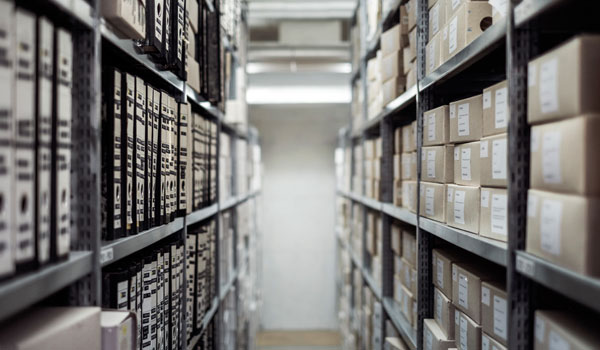

聚合管理
监控管理
订单管理
通讯协同
运力管理
财务管理
数据应用
全流程商品管理
全程管理系统能够实现产品全流程追溯，帮助企业实现精准的产品监控。

实时全程追踪
物流信息透明化，通过线上定位服务，您可以随时随地收到货物信息，自动化策略全流程覆盖，特殊订单自动定向处理。可视化的便捷操作，让您可以随时介入每个环节。
随时掌控物流
通过智能移动设备可在货物运输过程中为客户提供实时资讯，可随时查看运输时间、运输状态，货物视频监控（特殊运输可选）等，让客户能更的合理安排计划，节省时间和开支，让工作变得更加轻松。
另外，通过GPS数据上传，能在地图上直观展示运单周期和真实路径，还可通过微信、短信，及网络链接共享运单当前状态，进行主动干预，比如迟到运单警示。
货运送达回单
货运车辆到达系统设定电子围栏范围后会主动推送通知给收货人，以便收货人做好相应收货准备。送货人与收货人均可通过手机APP、微信等进行无纸化交接并上传电子回单。电子回单会自动记录相应的地理位置、时间及收货人的身份信息，从而确保信息的真实可靠。通过异常事件管理功能，可反馈货物破损、丢失、拒收等异常事件，并可上传图片及选择原因类型。收货人可以对送货服务进行评价，即时反馈异常，将异常事件实时更新并通知该订单链条上所有用户，大大缩短针对异常事件处理时间。
提货保障
提货通知直接推送至提货运输环节中各岗位工作人员，他们可以通过页面、微信，或手机应用程序同步查看货物信息。发货方可以接收领近货运车辆到达通知并查看实时位置，也可通过仓库预约模块确认预约信息。通过电子围栏可记录货运车辆的达到时间、等待时间和装卸货时间，自动或人工调度根据这些信息及时调整运营方案，提高运作效率。同时，各方均可上报货物破损、丢失、拒收、延误、订单撤回等异常事件并选择原因类型，通过协同操作实现无纸化交接。

设备监管
在运输过程中通过无线通讯技术及车载GPS传感器、温控设备、重力设备、探头设备等，实现了货物在运输过程中实时状态监控。用户可通过PC端移动端，实时了解运输状态：如可在地图上查看订单的车辆位置、线路、温度等数据。也可预设报警：如设置温度超出设定范围，系统将通过短信、微信、邮件和APP应用端推送超温警报信息并在订单详情内留下记录。